Mixed Types¶
When solving linear systems of equations as they arise for instance in the finite-element method (FEM), one is often interested in coupled solutions of more than one quantity. In fluid dynamics, a common example is solving a coupled system of velocity and pressure as it occurs in some formulations of the Navier-Stokes equations.
Mixed Set, DataSet, Map and Dat¶
PyOP2 provides the mixed types MixedSet MixedDataSet, MixedMap and MixedDat for a Set, DataSet, Map and Dat respectively. A mixed type is constructed from a list or other iterable of its base type and provides the same attributes and methods. Under most circumstances types and mixed types behave the same way and can be treated uniformly. Mixed types allow iteration over their constituent parts and for convenience the base types are also iterable, yielding themselves.
A MixedSet is defined from a list of sets:
s1, s2 = op2.Set(N), op2.Set(M)
ms = op2.MixedSet([s1, s2])
There are a number of equivalent ways of defining a MixedDataSet:
mds = op2.MixedDataSet([s1, s2], (1, 2))
mds = op2.MixedDataSet([s1**1, s2**2])
mds = op2.MixedDataSet(ms, (1, 2))
mds = ms**(1, 2)
A MixedDat with no associated data is defined in one of the following ways:
md = op2.MixedDat(mds)
md = op2.MixedDat([s1**1, s2**2])
md = op2.MixedDat([op2.Dat(s1**1), op2.Dat(s2**2)])
Finally, a MixedMap is defined from a list of maps, all of which must share the same source Set:
it = op2.Set(S)
mm = op2.MixedMap([op2.Map(it, s1, 2), op2.Map(it, s2, 3)])
Block Sparsity and Mat¶
When declaring a Sparsity on pairs of mixed maps, the resulting sparsity pattern has a square block structure with as many block rows and columns as there are components in the MixedDataSet forming its row and column space. In the most general case a Sparsity is constructed as follows:
it = op2.Set(...) # Iteration set
sr0, sr1 = op2.Set(...), op2.Set(...) # Sets for row spaces
sc0, sc1 = op2.Set(...), op2.Set(...) # Sets for column spaces
# MixedMaps for the row and column spaces
mr = op2.MixedMap([op2.Map(it, sr0, ...), op2.Map(it, sr1, ...)])
mc = op2.MixedMap([op2.Map(it, sc0, ...), op2.Map(it, sc1, ...)])
# MixedDataSets for the row and column spaces
dsr = op2.MixedDataSet([sr0**1, sr1**1])
dsc = op2.MixedDataSet([sc0**1, sc1**1])
# Blocked sparsity
sparsity = op2.Sparsity((dsr, dsc), [(mr, mc), ...])
The relationships of each component of the mixed maps and datasets to the blocks of the Sparsity is shown in the following diagram:

The contribution of sets, maps and datasets to the blocked sparsity.
Block sparsity patterns are computed separately for each block as described in Building a sparsity pattern and the same validity rules apply. A Mat defined on a block Sparsity has the same block structure, which is implemented using a PETSc MATNEST.
Mixed Assembly¶
When assembling into a MixedDat or a block Mat, the Kernel produces a local tensor of the same block structure, which is a combination of Local iteration spaces of all its subblocks. This is entirely transparent to the kernel however, which sees the combined local iteration space. PyOP2 ensures that indirectly accessed data is gathered and scattered via the correct maps and packed together into a contiguous vector to be passed to the kernel. Contributions from the local tensor are assembled into the correct blocks of the MixedDat or Mat.
Consider the following example par_loop() assembling a block Mat:
it, cells, nodes = op2.Set(...), op2.Set(...), op2.Set(...)
mds = op2.MixedDataSet([nodes, cells])
mmap = op2.MixedMap([op2.Map(it, nodes, 2, ...), op2.Map(it, cells, 1, ...)])
mat = op2.Mat(op2.Sparsity(mds, mmap))
d = op2.MixedDat(mds)
op2.par_loop(kernel, it,
mat(op2.INC, (mmap[op2.i[0]], mmap[op2.i[1]])),
d(op2.read, mmap))
The kernel for this par_loop() assembles a 3x3 local tensor and is passed an input vector of length 3 for each iteration set element:
void kernel(double v[3][3] , double **d ) {
for (int i = 0; i<3; i++)
for (int j = 0; j<3; j++)
v[i][j] += d[i][0] * d[j][0];
}
The top-left 2x2 block of the local tensor is assembled into the (0,0) block of the matrix, the top-right 2x1 block into (0,1), the bottom-left 1x2 block into (1,0) and finally the bottom-right 1x1 block into (1,1). Note that for the (0,0) block only the first component of the MixedDat is read and for the (1,1) block only the second component. For the (0,1) and (1,0) blocks, both components of the MixedDat are accessed.
This diagram illustrates the assembly of the block Mat:
Assembling into the blocks of a global matrix  : block
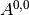 uses maps 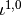 and 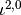,
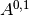 uses and 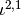,
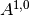 uses
: block
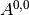 uses maps 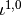 and 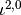,
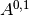 uses and 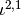,
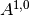 uses  and and finally
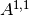 uses and for the row
and column spaces respectively.
and and finally
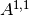 uses and for the row
and column spaces respectively.